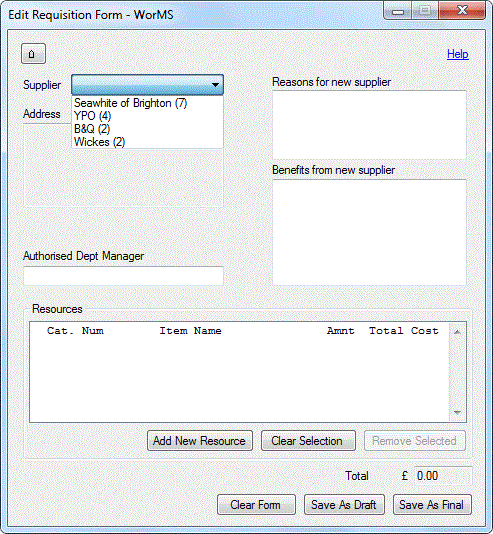

This form is used to create new and change or reuse existing requisition forms. Once forms have been filled in, they can be saved as a draft or final copy and viewed in the Requisition Form Manager.
NOTE: The Requisition Form editor requires suppliers added through the Supplier Manager to be available prior to opening. If this is not fulfilled, an error message will appear and the user will be brought to the Home Screen.
Upon clicking Add New Requisition Form from the Home Screen, with suppliers available, a blank requisition form will be opened ready for input.

Clicking the supplier selector on the top-left of the form will retrieve the suppliers on file and display them in a list, each with the number of times they have been used in brackets.
Selecting a supplier will automatically fill in the address text box below with the selected supplier's address, as stored on file. The rest of the requisition form can be completed with requested resources, reasons for a new supplier, benefits from a new supplier and the authorised department manager.
Upon clicking Add New Resource and filling out the information for a new resource in the Add/Edit Requested Resource dialog, the resource is added to the resource list. Selecting an item will allow you to make changes to it through the Change Resource button or remove it entirely through the Remove Selected button. To enable the Add New Resource button again after selecting a resource, click the Clear Selection button.
If a new requisition form is created with resources selected from the View Low Stock dialog, they will automatically be added to the resource list and can be changed by selecting them and clicking the Change Resource button for each. It is mandatory that all resources in the list contain a catalogue number for the form to be saved at all.
When a previously saved requisition form is selected to be reused or changed, its contents are automatically added to a new requisition form. This means that if the form is saved as a draft or final, it will be saved alongside the old file.
Any time a previously saved requisition form's supplier cannot be found in the suppliers file, the requisition form's supplier will appear as blank. In this situation, the form can still be changed and then saved as a draft so the supplier needed can be added through the Supplier Manager and used in the form when it is opened again.